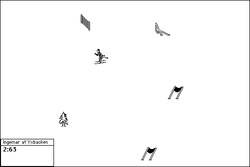

Download
ISG-103.zip (209K) Ingemar's Skiing Game 1.0.3 repackaged into a zipped hfs disk image and checksum file. The disk image can be mounted with Mini vMac.
ISG-103.hqx (311K) Ingemar's Skiing Game 1.0.3 in the original format.
copyright: Ingemar Ragnemalm
mod date: Aug 30, 2000
license: freeware
official url :
Ingemar's Skiing Game
"The game of slalom for 2 or more players".
In Mini vMac, this game requires the more accurate mouse emulation of Full Screen Mode.

If you find these downloads useful, please consider helping the Gryphel Project, which hosts them.
Here are the md5 checksums for the downloads, signed with Gryphel Key 5:
--------- GRY SIGNED TEXT --------- 027513af66f526ad11c9e9c6cf1c03f0 ISG-103.zip 914cf7b80be46d7285a7aec01b41e8f4 ISG-103.hqx ------- BEGIN GRY SIGNATURE ------- Gry/4Xa8CFcUzxdN/HHI8KKGs7W2Rq7t9odEdJN+CuQh1dtHvq6dhA6EckQ5UO1i Elk6WzfAdIJ5XkfhdCiD8bGsdCD6tvVMXdpgon3VIBhGKKvBqSu1UsFKiKenX3GE GcMWfMkasOqklt6gFcT+wIKoF+0ZYrexa3R2SVee1EV/B5+MC6yemUVIG/Wo4QPI -------- END GRY SIGNATURE --------